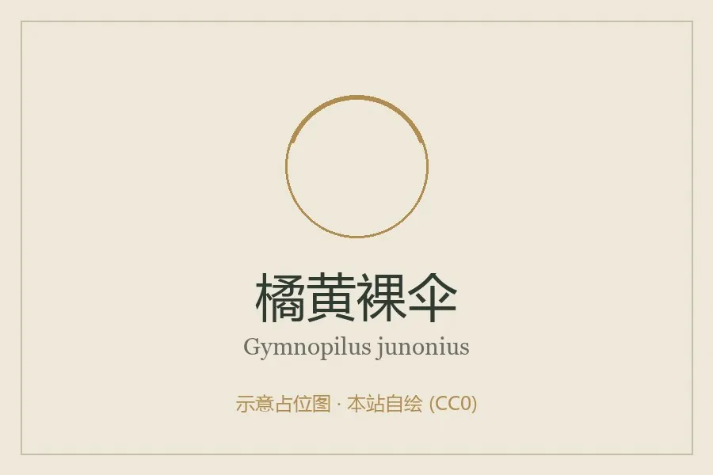

真菌 · 真菌界
橘黄裸伞 Gymnopilus junonius

球盖菇科大型蘑菇，菌盖橘黄至橙褐、丛生于树桩，含神经毒性成分且味苦，属有毒菌类，严禁采食。
- 分类
- 门担子菌门纲伞菌纲目伞菌目科球盖菇科属裸伞属
- 栖息环境
- 阔叶树与针叶树的树桩、倒木上，秋季丛生
- 地理分布
- 北半球温带至亚热带广布，中国南北各地及欧洲、北美、澳大利亚常见
- 保护级别
- 暂无评估；种群稳定
物种志
橘黄裸伞的子实体大型，菌盖直径 5–20 厘米，初期半球形，后平展，表面橘黄、橙黄至锈橙褐色，具细纤维状鳞片，边缘内卷。菌肉厚，黄色，味苦。菌褶淡黄后变锈褐色，较密，弯生。菌柄长 5–15 厘米，直径 1–3 厘米，橘黄色，上部有丝膜状菌环痕，基部常膨大。孢子印锈褐色。
橘黄裸伞丛生于阔叶树或针叶树的树桩、倒木上，秋季发生，常数十朵簇生成一大丛。它是有毒菌，含神经毒性成分（包括致幻类物质），误食后出现幻觉、兴奋、共济失调、恶心呕吐，严重者可致精神错乱与意外伤害；其味极苦，通常不会大量误食，但仍禁止采食。它与可食的某些鳞伞、蜜环菌外形相近，区别在于橘黄裸伞味苦、孢子印锈褐、丛生于木上。
形态与习性
- 菌盖直径 5–20 厘米，橘黄至橙褐，有细鳞片
- 菌褶淡黄后变锈褐色，较密
- 菌柄长 5–15 厘米，橘黄色，基部膨大
- 孢子印锈褐色，孢子椭圆形
- 毒性含神经毒性成分，可致幻觉与精神错乱，禁止采食
- 辨识味极苦、孢子印锈褐、丛生于木桩
趣味知识
- 橘黄裸伞在英文里被称为“大笑菇”，因为误食者会出现难以控制的大笑与幻觉。
- 它的味道极苦，这在一定程度上减少了误食，但绝不能因此放松警惕。
- 它常与蜜环菌混淆，区别是橘黄裸伞孢子印锈褐色、菌肉味苦。
- 误食后会出现共济失调与精神错乱，严重时可因判断力丧失而受伤。